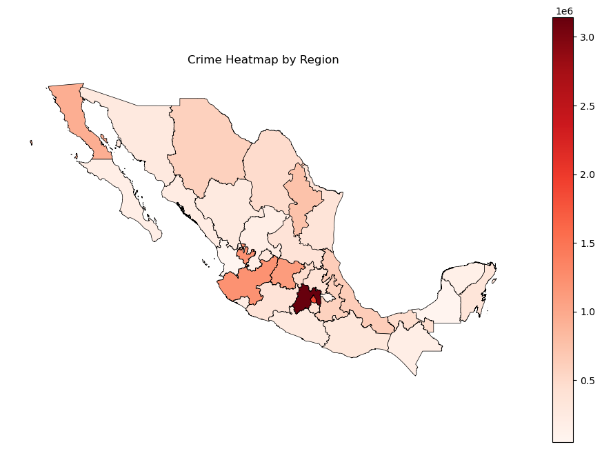
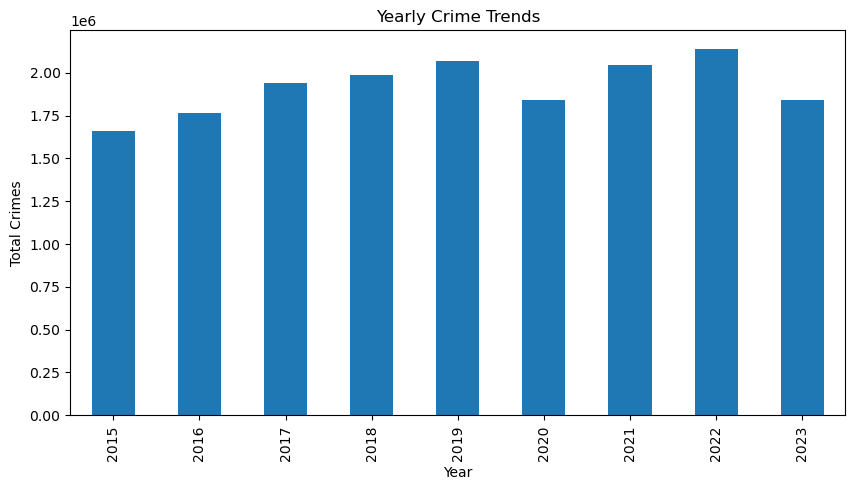
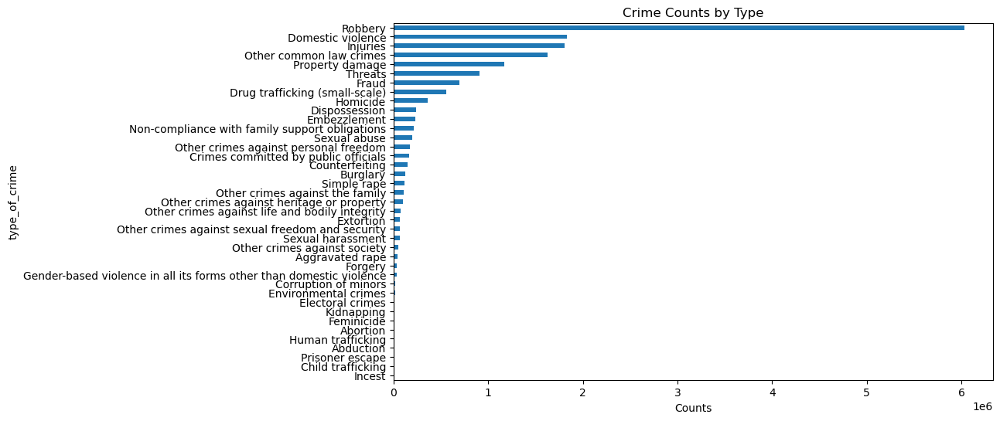
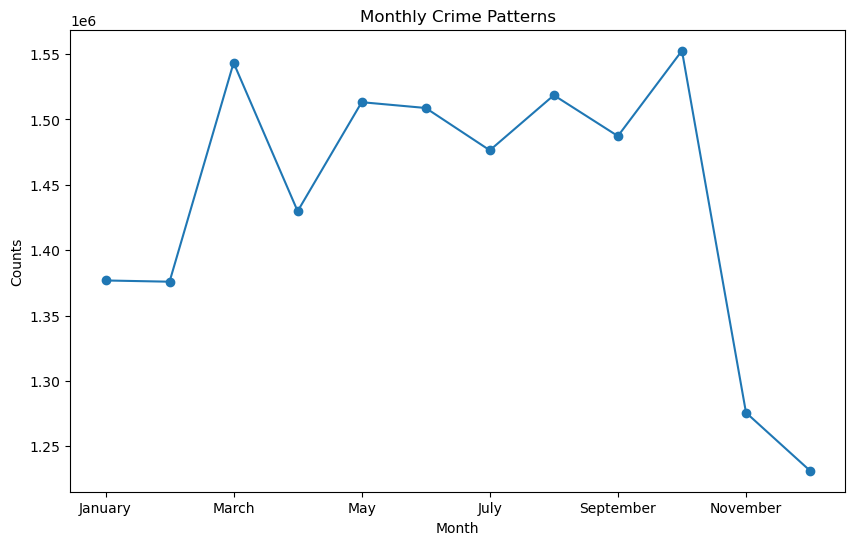
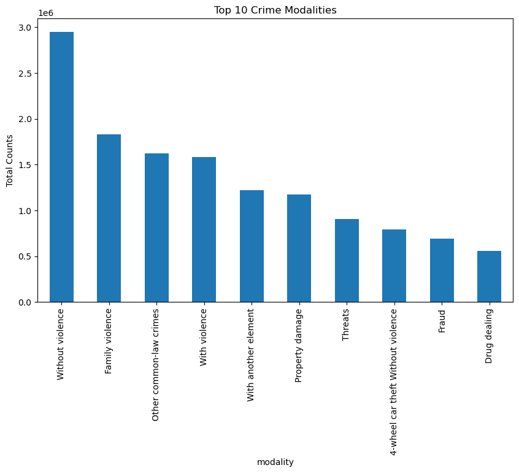
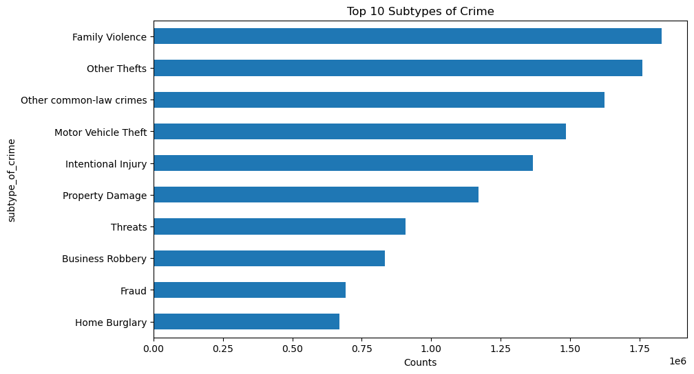
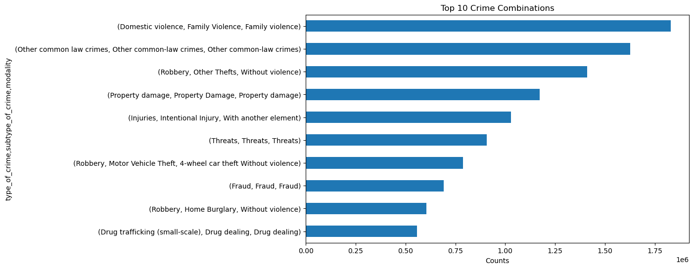

Periodic Crime Report for Mexico 2015 - 2023
1. Crime Heatmap by Region

2. Yearly Crime Trends

2. Crime Counts by Type

3. Monthly Crime Patterns

4. Top 10 Crime Modalities

5. Top 10 Subtypes of Crime

6. Top 10 Detailed Crime Combinations

Sources / Fuentes:
Landeros, Ernesto. Official Crime Stats Mexico (2015 - 2023). Kaggle, 2024, www.kaggle.com/datasets/elanderos/official-crime-stats-mexico-2015-2023. Accessed 14 Mar. 2025.